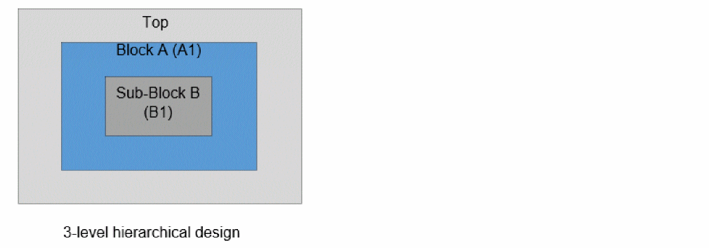
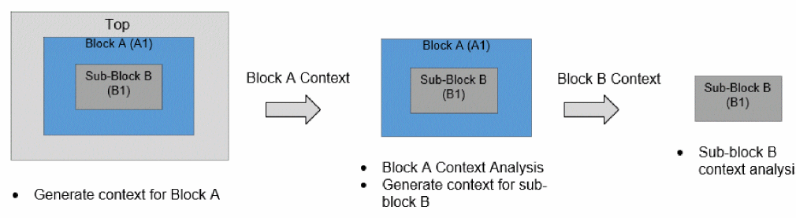

Context Generation from Context Analysis
In a three-level hierarchical design, Tempus supports the following nested context analysis flow to perform sub-block B context analysis:
- Generate context for block A from top-level analysis
- Perform block A context analysis and generate context for sub-block B
- Perform sub-block B context analysis
A nested context analysis flow is shown in the figure below:


This analysis is supported with more than 3 levels of hierarchy also. The Top and Block A analysis can also be Top+BM analysis.Tempus supports below use-models of nested context flow:
| Use Model | Top | Block | Sub-Block |

In the above figure, when context data is generated for the sub-block B (from block A context analysis), separate context data is generated for each instance of the sub-block (with respect to Top). In use model 4, separate context data is generated for A1/B1, A1/B2, A1/B3, A1/B4, A2/B1, A2/B2, A2/B3, A2/B4. The MIM clustering check will be done for all these sub-module instances during both sub-module context generation and analysis.
The user-interface for context generation and reading is the same as regular context analysis. The only difference is that full instance name (with respect to Top level) needs to be specified for the -instance parameter during sub-module context analysis for both write_timing_context and read_timing_context commands.
Tempus also supports nested context analysis flow in the case where the same sub-block is instantiated in different blocks as shown in the figure below.

In this case, the sub-module context for instances A1/C1 and B1/C1 will be generated from block A and block B context analysis respectively. The contexts of instances A1/C1 and B1/C1 can be specified with the read_timing_context -merge command to perform MIM context analysis.
Return to top